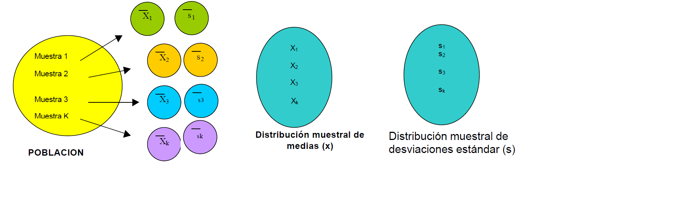

Distribuciones de probabilidad
Distribuciones de probabilidad asociadas a las fuentes de incertidumbre en las medidas
Algunas de las distribuciones estadísticas de probabilidad comúnmente utilizadas para modelar estas fuentes de incertidumbre incluyen:
Distribución de Cauchy-Lorentz
A veces, se utiliza para modelar errores de medición cuando se sabe que hay una distribución de valores verdaderos, pero los errores de medición son asimétricos y pueden ser influenciados por factores externos no controlados.
Distribución de Poisson
Se utiliza comúnmente para modelar la distribución de conteos, por ejemplo, en el caso de mediciones que involucran recuentos de partículas o eventos discretos.
Distribución Exponencial
Se utiliza para modelar el tiempo entre eventos sucesivos en un proceso de Poisson, y a veces se aplica en el contexto de mediciones de tiempo.
Distribución normal
Una distribución ampliamente usada y la más importante de toda la estadística, diversas poblaciones y fenómenos numéricos son representados por esta distribución por ejemplo
Errores de medición en experimentos científicos
Mediciones antropométricas
Tiempos de reacción en experimentos psicológicos
Mediciones de inteligencia y aptitud
Es la distribución más utilizada para modelar errores de medición aleatorios. Se asume que los errores se distribuyen normalmente alrededor del valor verdadero, con la mayor densidad de probabilidad centrada en el valor medio.
Función de distribución de probabilidad
Esta distribución depende de los parámetros de localización y escala, determinados por la media \(E(X)=\mu\) y la desviación estándar \(sd = \sigma\),
El valor de \(\sigma\) es la distancia desde \(\mu\) hasta los puntos de inflexión de la curva (los puntos donde la curva cambia de concavidad de hacia abajo a hacia arriba).
La función de distribución de probabilidad está dada por:
\[\LARGE f(x)=\frac{1}{\sqrt{2\pi}\sigma}e^{-\frac{(x-\mu)^2}{2\sigma^2}} \] Con \(-\infty<\mu<\infty\) y \(\sigma>0\)
Si una variable se distribuye normal se denota de la forma:
\[\LARGE x \sim N(\mu, \sigma^2)\]
Aplicativo de distribuciones de probabilidad continuas
Distribución rectangular ó uniforme
Se utiliza cuando no hay razón para creer que los errores de medición están sesgados hacia ninguna dirección. Por ejemplo, cuando se está midiendo algo dentro de ciertos límites y la probabilidad de que el valor esté dentro de ese rango es igualmente probable en todo el intervalo.
En una distribución rectangular cada valor en un intervalo dado tiene la misma probabilidad, o sea la función de densidad de probabilidad es constante en este intervalo.
Sea \(X∼U(a,b)\), es decir, una variable aleatoria con distribución uniforme en el intervalo (a,b), con \(a,b \quad \varepsilon \quad \mathbb{R}\):
- La función de densidad de probabilidad es :
\[ f(x)=\begin{cases} \frac{1}{b-a}, & \mbox{si x $\varepsilon \quad \mathbb{R}$,}\\ 0, & \mbox{e.o.c.} \end{cases} \]
La función de distribución acumulada (CDF) es \[ F(x)=P(x \leq \frac{x-a}{b-a}) \]
La esperanza o valor medio es
\[E(x)=\frac{a+b}{2}\]
- La varianza
\[E(x)=\frac{(b-a)^2}{12}\]

Se usa para estimar la incertidumbre cuando:
Un certificado da unos límites sin especificar el nivel de confianza (por ejemplo, 25 mL \(\pm\) 0,05 mL)
Se ha hecho una estimación en forma de un rango máximo (\(\pm\)a) sin conocimiento de la forma de la distribución.
https://huggingface.co/spaces/FreddyHernandez/discrete_uniform
El rango de una distribución de probabilidad se refiere al conjunto de todos los posibles valores que puede tomar una variable aleatoria en esa distribución. Es la diferencia entre el valor máximo y el valor mínimo de esta variable.
Ejemplo
Un químico estima un factor de contribución entre 7 y 10, pero cree que el valor podría ser cualquiera entre esos dos valores, pero no tiene idea de si alguna de las partes del rango tiene mayor probabilidad de ser que otra. Esto es una descripción de una función de distribución rectangular con un rango 2a=3 (semi rango de a=1,5).
Sea la función de estimación de incertidumbre rectángular.
La siguiente fórmula se usa si la incertidumbre que se desea calcular es por especificaciones o por resulución del equipo análogo, en cada caso se reemplaza el valor de a por cada cada valor.
\[u(x)=\frac{a}{\sqrt 3}\] En el caso que un equipo sea digital, la fórmula de la incertidumbre asociada a la resolución es:
\[u(x)=\frac{a}{\sqrt {12}}\]
Se puede calcular una estimación de la incertidumbre estándar. Usando el rango antes indicado, a=1,5, resulta una incertidumbre estándar de:
\[u(x)=\frac{1,5}{{\sqrt 3}} = 0,87\]
Distribución triángular
La función de distribución de probabilidad es:
\[ f(x)=\begin{cases} \frac{2(x-a)}{(b-a)(c-a)}, & \mbox{si $a\leq x < c$,}\\ \frac{2(b-x)}{(b-a)(b-c)}, & \mbox{si $c\leq x < b$,}\\ 0, & \mbox{e.o.c.} \end{cases} \]
La grafica de la función de distribución de probabilidad es:
library(triangle)
curve(dtriangle(x,3,11,8),xlim=c(3,11),lwd=2,ylab="f(x)",main="Distribución triangular")- La esperanza o valor medio es
\[E(x)=\frac{a+b+c}{3}\]
- La varianza
\[E(x)=\frac{a^2+b^2+c^2+ab+ac+bc}{6}\]
Para estimar incertidumbre se usa cuando
La información disponible está mas delimitada que en una distribución rectangular. Los valores cercanos a la mitad de la distribución son más probables que los próximos a los límites.
Se ha hecho una estimación en forma de un rango máximo \((\pm a)\) descrito por una distribución simétrica.
Sea la función de estimación de incertidumbre triángular
\[u(x)=\frac{a}{\sqrt 6}\]
Distribuciones de muestreo
Un estadístico es una función de las variables aleatorias observables en una muestra, como la media muestral \(\bar Y\), la varianza muestral \(S^2\), Max, Min, la amplitud (Rango = max – min), la mediana muestral, etc.
Se usan estadísticos para hacer inferencias o estimaciones, acerca de parámetros de población desconocidos. Todos los estadísticos son funciones de las variables aleatorias observadas en una muestra, por tanto también son variables aleatorias. En consecuencia, todos los estadísticos tienen distribuciones de probabilidad, que llamaremos distribuciones muestrales.
La distribución muestral de un estadístico proporciona un modelo teórico para el histograma de frecuencia relativa de los posibles valores del estadístico que observaríamos por medio de muestreo repetido.
Si se seleccionan muestras aleatorias de tamaño 20 en una población grande. Se calcula la media muestral \(\bar X\) para cada muestra; la colección de todas estas medias muestrales recibe el nombre de distribución muestral de medias, así como tambien se puede obtener la distribución muestral de las desviaciones estándar como se ilustra en la siguiente figura:

Un elemento importante en los procesos de simulación es identificar las distribuciones de probabilidad apropiadas para los datos. Esto, normalmente, requiere analizar información empírica o histórica, y ajustarla a alguna distribución.
Sesgo
En metrología se diferencian diferentes tipos de sesgo
Sesgo de medida
valor estimado de un error sistemático (VIM)
Sesgo instrumental
Diferencia entre la media de las indicaciones repetidas y un valor de referencia (VIM).
La determinación del sesgo global en relación con valores de referencia apropiados es importante para establecer la trazabilidad a patrones reconocidos.
Según la guia ISO se deben aplicar correcciones para todos los efectos sistemáticos significativos y reconocidos.
La determinación del sesgo es un componente esencial de la incertidumbre global.
A la hora de decidir si un sesgo conocido puede ser razonablemente descartado, se recomienda la siguiente aproximación:
Estimar la incertidumbre combinada sin considerar el sesgo relevante.
Comparar el sesgo con la incertidumbre combinada.
Cuando el sesgo no es significativo comparado con la incertidumbre combinada, el sesgo puede ser descartado.
Cuando el sesgo es significativo comparado con la incertidumbre combinada, se requiere una acción adicional. Acciones apropiadas podrían ser:
Eliminar o corregir el sesgo, haciendo la debida asignación de la incertidumbre de la corrección.
Informar del sesgo observado y su incertidumbre además del resultado.
El sesgo puede estar determinado por:
Un método
Se determina por comparación de un método de referencia con método empírico. Si los resultados muestran que el sesgo es estadísticamente estadísticamente no significativo, la incertidumbre estándar es la del método de referencia, combinada con la incertidumbre estándar asociada a la diferencia medida entre métodos, dada por la desviación estándar de la distribución de muestreo de diferencia medias para varianzas poblacionales desconocidas pero iguales.
EJEMPLO Un método (M1) para determinar la concentración de selenio es comparado con un método de referencia (M2). Los resultados (en \(mg/kg\)) para cada método son los que se muestran a continuación:
| Método | \(\bar x\) | s | n |
|---|---|---|---|
| M1 | 5.40 | 1.47 | 5 |
| M2 | 4.76 | 2.75 | 5 |
Usando pruebas de hipótesis pruebe que no existen diferencias significativas entre ambos métodos.
\[H_0=\mu_1=\mu_2\] \[H_1=\mu_1\neq \mu_2\]
Para probarlo se usa la distribución de muestreo para la diferencias de medias con varianzas desconocidas y diferentes.
La fórmula para unificar las desviaciones estándar vienen dadas por:
\[S^2=\frac{(n_1-1)*S_1^2+(n_2-1)*S_2^2}{n_1+n_2-2}\] Aplicando la fórmula se tiene
\[s_c=\sqrt{\frac{1.47^2*(5-1)+2.75^2*(5-1)}{5+5-2}}=2.205\]
El valor del estadístico se calcula mediante la fórmula:
\[t_{n_1+n_2-2}=\frac{\bar X_1-\bar X_2-(\mu_1-\mu_2)}{s_c\sqrt{\frac{1}{n_1}+\frac{1}{n_2}}}\] reemplazando:
\[t_{8}=\frac{5.4-4.76-(0)}{2.205\sqrt{\frac{1}{5}+\frac{1}{5}}}=\frac{0.64}{1.4}=0.46\] para definir el valor p
\[P(t_8>0.46)=32.89\%\]
pt(0.46, 8, lower.tail = F) ## [1] 0.32888plot( function(x) dt( x, df = 8 ), -5, 5, ylim = c( 0, 0.4 ),
col = "red", type = "l", lwd = 2,
main = "Función densidad t de Student df = 8" )
abline(v=0.46,col=2)no hay diferencias significativas entre los resultados dados por los dos métodos. La diferencia de medias muestrales es 0,64, y se compara con un término de la desviación estándar de 1,4, asociada a la diferencia, y por lo tanto representa una contribución aplicable a la incertidumbre asociada al sesgo medido.
Actividad
Se investiga el efecto de la variación de una hora en el tiempo de extracción mediante una prueba t con 5 mediciones, todas ellas en la misma muestra, para el tiempo de extracción normal, y para la extracción con una hora menos
Los datos suministrados son:
| Momento | media | desviación estándar s | |||||
|---|---|---|---|---|---|---|---|
| Antes | 1.67 | 1.86 | 1.88 | 1.55 | 1.72 | ||
| Después | 1.87 | 1.83 | 1.72 | 1.54 | 1.67 |
- Escriba la prueba de hipotesis asociada
- Acepte o rechace la hipótesis
- Halle la media y desviación estándar
- Halle el valor de la contribución asociada al efecto de la variación permitida en el tiempo de extracción
x1=c(1.67,1.86,1.88,1.55,1.72)
x2=c(1.87,1.83,1.72,1.54,1.67)
t.test(x1,x2) # Prueba t de Student##
## Welch Two Sample t-test
##
## data: x1 and x2
## t = 0.11759, df = 7.9863, p-value = 0.9093
## alternative hypothesis: true difference in means is not equal to 0
## 95 percent confidence interval:
## -0.186164 0.206164
## sample estimates:
## mean of x mean of y
## 1.736 1.726